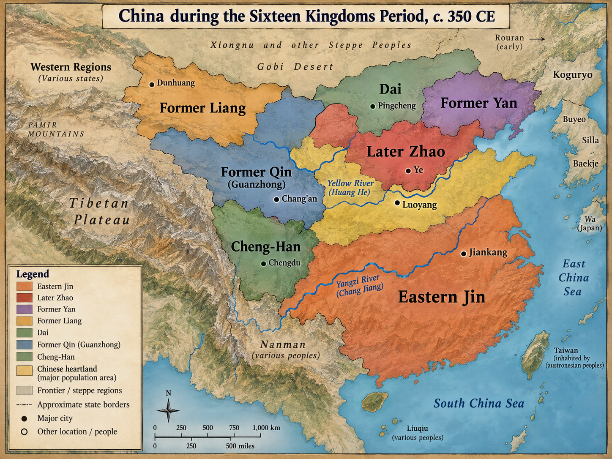
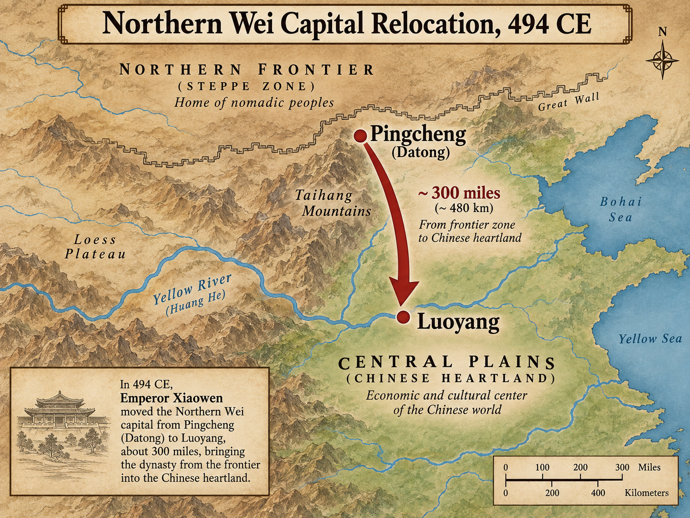

316–580 CE
When "barbarians" rule China,
who gets to define what "Chinese" means?
After 316 CE, north China was ruled by non-Chinese dynasties for nearly 300 years.
Chinese elite who remained had to decide:
Follow the chain: conquest advantage → state-building → military fracture → new hybrid institutions.
Not a single group—diverse peoples with different histories.
Important: These weren't racial categories—they were political and cultural identities that shifted over time.
Chinese classificatory label, not stable ethnographic map. These identities were fluid—families could shift between categories through political alliance, marriage, or relocation.
Key point: "Hu" often means "people from north/west" or "non-Han" in documents, but same person could be labeled differently depending on context (office, marriage, residence).
Technology mattered because institutions and political conditions made it usable at scale.
Case Study
Liu Yuan founded a Xiongnu-led state called Han and claimed a connection to the earlier Han imperial house; forces serving his regime, including Shi Le's army, captured Luoyang in 311.
Liu Yuan founded the Han-Zhao regime and claimed Han dynastic legitimacy. He died in 310. In 311, armies of the regime, including forces led by Shi Le, captured and plundered Luoyang.
Identity complexity: Liu Yuan claimed Han imperial descent, used Chinese dynastic name, but led Xiongnu confederation. Shows how blurred lines already were.

China during the Sixteen Kingdoms period, c. 350 CE
Pattern: Non-Chinese rulers needed Chinese administrative expertise.
Chinese officials needed non-Chinese patrons to survive.
Jie leader, former slave, founder of Later Zhao. One of most fascinating figures of era.
Significance: Shows you could govern North China without reading Chinese, BUT only if you employed Chinese administrators. Also converted to Buddhism (Fotudeng as advisor)—we'll see why that mattered in Lecture 3.
Ethnic violence: His successor launched persecution of ethnic Chinese, which Chinese subjects carried out "with vengeance"—violence flowed multiple directions based on who held power.
Suggested source area: textbook Ch. 4, Non-Chinese Dominance in the North.
Early Strategy: Separation Model
Tuoba/Xianbei dynasty that unified north (439) and experimented with centralizing reforms.
Early phase (Pingcheng): Hybrid state—steppe military organization + Chinese bureaucratic practices. Military effectiveness depended on cavalry skills maintained through pastoral life. Identity preservation: remain Xianbei, not become Chinese.
Northern Wei became durable by combining steppe military power with Chinese-style agricultural administration.
Northern Wei land-allocation system designed to keep farmland productive and households registered for taxes and labor obligations.
Allotments were based largely on available household labor, with additional allocations shaped by rank and status. The system asserted the state's authority to organize land and taxpayers.
Born to Chinese mother (Empress Dowager Feng). Wanted to unite Chinese and Xianbei elites. Decided separation was unsustainable.
Most significant figure in early medieval Chinese history, yet often overlooked.
Context: 494 capital move to Luoyang (old Han/Jin capital). 150,000 Xianbei warriors moved south. Court-driven reforms associated with "sinicization."
Modern scholarship caution: Don't frame as "they became Chinese." Frame as state centralization + elite competition. Reforms strengthened bureaucratic center, reoriented court culture, BUT produced backlash among frontier military elites.

Northern Wei capital relocation, 494 CE
Moving the capital was geopolitical statement: We are not steppe warriors anymore—we are Chinese emperors.
Suggested source area: textbook Ch. 4, The Northern Wei and Hybrid Xianbei-Chinese Culture.
Despite Xiaowen's program, result was more complex than "becoming Chinese"
This wasn't "Chinese win" or "Xianbei win"—it was mutual transformation.
Crisis in the old garrison order helped produce the hybrid fubing system.
His speeches to each group
To Xianbei: "The Han are your slaves... they till and weave for you."
To Chinese: "The Xianbei are your retainers... they fight bandits so you are safe."
Both statements were partially true. Both communities needed each other.
Han Chinese by ancestry but raised among Xianbei. Perfect example of hybrid identity in northern society.
Political genius: His speech to each group shows remarkable manipulation of ethnic tension. He tells each side they're superior, but frames superiority differently (military vs. economic). Shows he understood mutual dependence.
Significance: Represents new generation of elites who could operate in both worlds—neither purely Xianbei nor purely Chinese, but something new.
Both regimes were hybrid, but the western state had stronger incentives to integrate Chinese and Xianbei military elites.
Why This Matters
The hybrid military institutions created during division became tools of reunification. Fubing later became a foundation of Sui and Tang military organization.
Military system associated with Western Wei/Northern Zhou reforms under Yuwen Tai. Matters for Sui/Tang military state.
Key features: Multiethnic; registered separately (honorable status); combined steppe and Chinese elements; emerged from hybrid northwestern society.
Bridge forward: This system will appear again in Tang lectures as foundation of early Tang military power.
Suggested source area: textbook Ch. 4, Revolt of the Garrisons and the Division of the North.
Political division accelerated a long-term shift of population and economic activity toward southern China.
| Northern Dynasties | Southern Dynasties |
|---|---|
| Non-Chinese military elite | Chinese refugee aristocracy |
| Hybrid culture emerging | "Pure" Chinese culture claimed |
| More unified (Northern Wei) | Constant dynastic change |
| Buddhist-Confucian-Daoist mix | Buddhist flourishing + aristocratic culture |
Southern Elite Culture:
Military strongmen could seize and govern a dynasty during their own lifetimes, but they could not reliably transfer power to heirs or subordinate other armed rivals.
Suggested source area: textbook Ch. 4, The Southern Dynasties.
By 580 CE, north China had been ruled by non-Chinese dynasties for over 250 years. But something remarkable happened:
The lines between "Chinese" and "non-Chinese" had blurred beyond recognition.
Who counts as Chinese? The Period of Division showed Chinese identity was never simply about blood or birth. It was about culture, language, values—and these could be adopted, adapted, and transformed.
Buddhism's Conquest of China
How did Buddhism, an Indian religion that contradicted Confucian values, conquer China even as "barbarian" armies were conquering its territory?
→ / Space: Next | ←: Previous | S: Speaker Notes | F: Fullscreen | O: Overview | ESC: Close popup